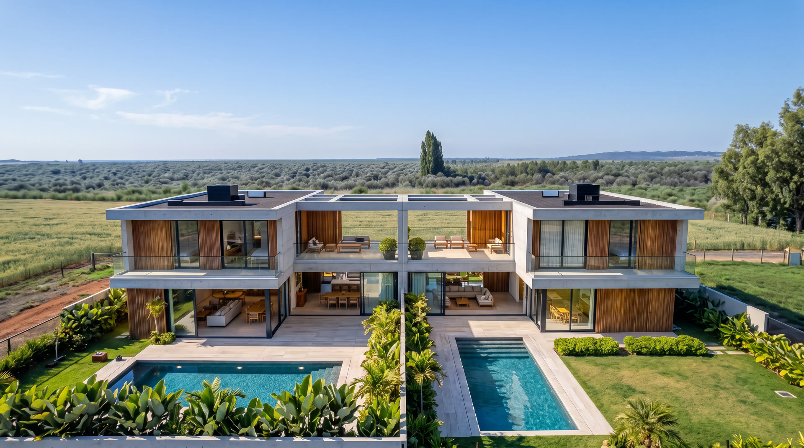
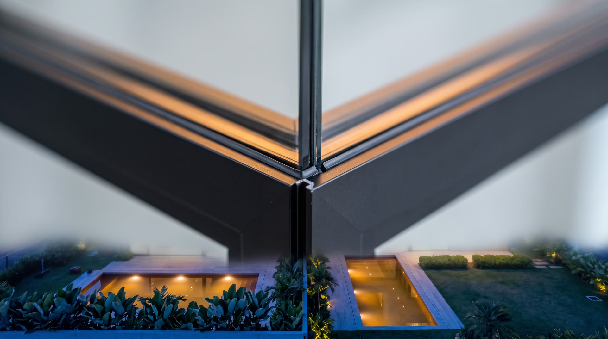
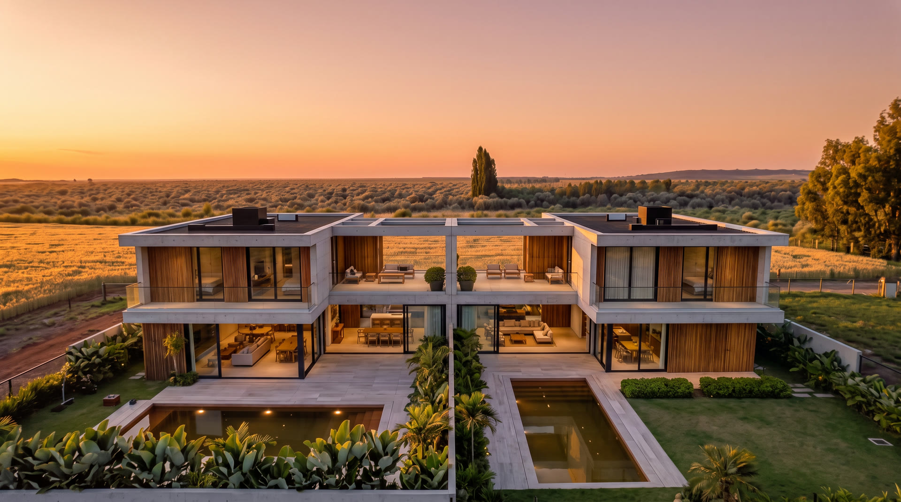
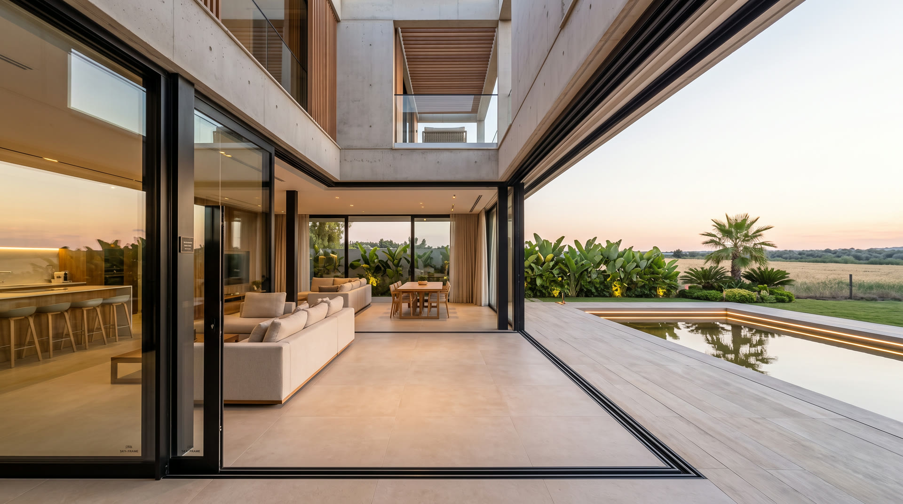
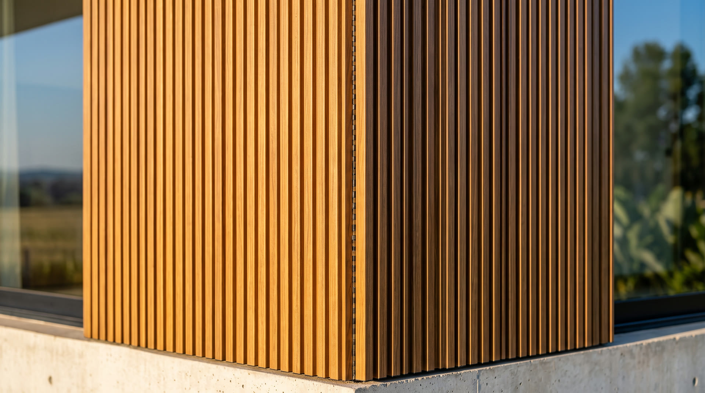
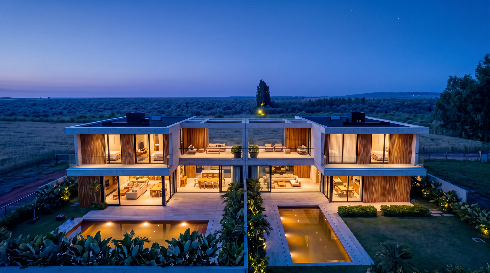
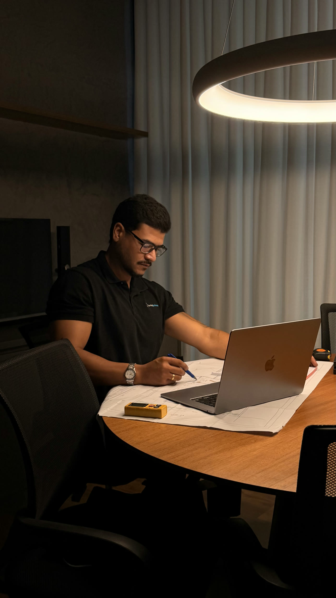

Mais vidro, mais luz, menos moldura.
Duas unidades espelhadas que dividem a estrutura — e multiplicam o retorno. Cada detalhe de esquadria, brise, ripado e guarda-corpo foi resolvido em alumínio de alto desempenho, do desenho à instalação.







Do primeiro traço do arquiteto à última regulagem de fechadura, Wellington acompanha pessoalmente cada etapa: especificação técnica, medição em obra, fabricação sob medida e instalação.
É um único responsável pelo resultado — sem ruído entre projeto, fábrica e obra. Esquadrias que fecham macio, vedam de verdade e envelhecem bem.
Conversar no WhatsAppEnvie o projeto ou as medidas pelo WhatsApp e receba uma proposta técnica sob medida — sem compromisso.
Falar com Wellington Passos